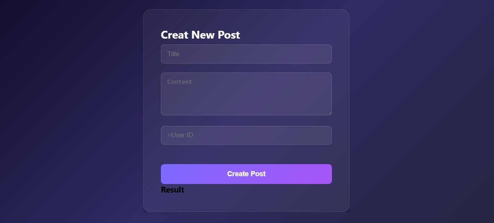
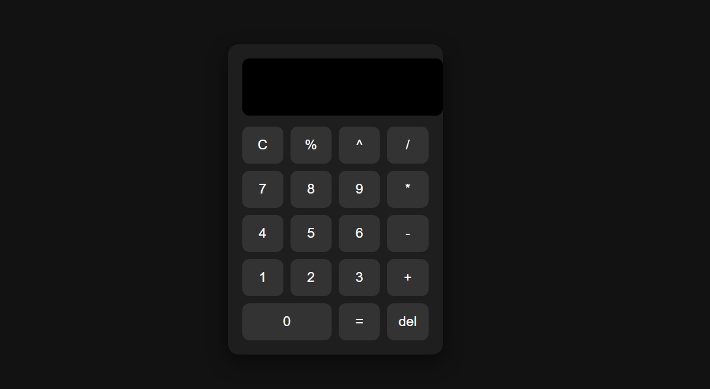
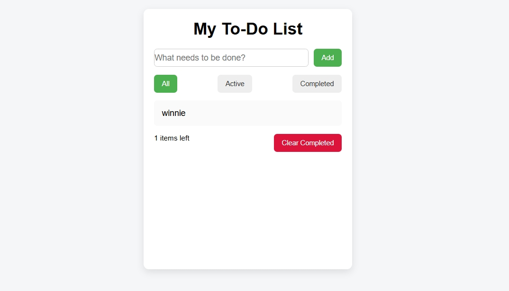
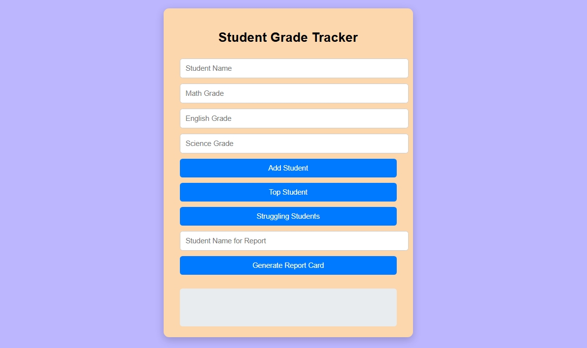

Weather Dashboard
A weather dashboard that fetches real-time data from an external API and displays the current temperature, weather condition, and location. Built with JavaScript's Fetch API, it demonstrates how to work with live data and dynamically update the DOM based on API responses.
Live Demo
Creat New Post
A form-based project that sends user input to an external API using a POST request. It validates the input before submission, manages button states to prevent duplicate requests, and displays the server's response — showcasing how JavaScript handles real-world form interactions and API communication.
Live Demo
Calculator
A fully functional calculator that handles addition, subtraction, multiplication, and division. Built using vanilla JavaScript and DOM manipulation, it responds to both mouse clicks and keyboard input, with a clean display that updates in real time as the user types.
Live Demo
Click Counter
An interactive click counter that tracks how many times a button is pressed and updates the count live on screen. A focused exercise in JavaScript event listeners and DOM updates, it also includes reset functionality to bring the counter back to zero.
Live Demo
To Do List
A task management app that lets users add, complete, and delete to-do items. Each task persists across page refreshes using the browser's localStorage, meaning your list survives even after closing the tab — a practical demonstration of client-side data storage.
Live Demo
Student Grade Tracker
A grade tracking tool where users can enter student names and scores to calculate averages and assign letter grades automatically. Built with JavaScript array methods and conditional logic, it processes multiple entries and displays a clear summary of each student's performance.
Live Demo